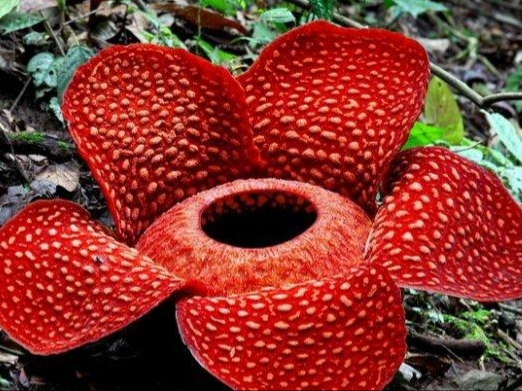

1. Bunga Padma Raksasa (Rafflesia arnoldii)
Tumbuhan langka di Indonesia yang berada di peringkat pertama daftar tumbuhan yang terancam punah yaitu bunga Padma Raksasa atau bunga Rafflesia. Tumbuhan ini mengeluarkan bau busuk yang sangat menyengat sehingga tak heran bila sering disebut sebagai bunga bangkai. Bunga ini terkenal di dunia karena memiliki ukurannya yang besar dengan diameter 1 meter dan berat mencapai 10 kilogram.